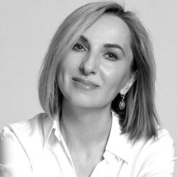
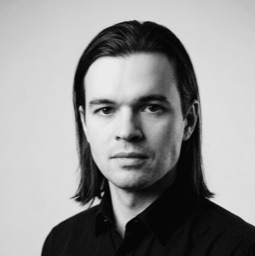
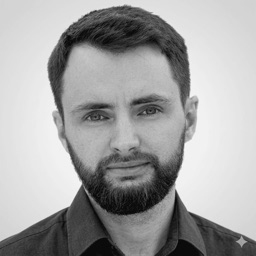
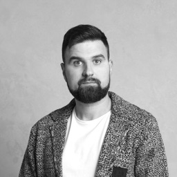

Отвечаете за результат? Управляйте им
Работаю с руководителями, у которых после роста компании, новой роли или реорганизации перестало работать то, что работало раньше. Я Владимир Семенюк, ментор для руководителей. Был CTO Нетологии и CIO mos.ru, управлял командами свыше 500 человек. Больше 14 лет в управлении.
- 50+подготовленных руководителей
- 20+выросли до VP и C‑level ролей
- 1500+часов менторских сессий

С чем приходят
Управленческое
Перестало работать то, что работало
- Реорганизация буксует
- Новые инструменты есть, а работать по‑новому не получается
- Компания растёт или сжимается быстрее, чем успевает управление
Личное
Карьера и роль руководителя
- Утонул в операционке
- Нужен следующий уровень, а прежний опыт не помогает
- Тупик, страх сокращения, долгий поиск работы
Не психотерапия: личное только в связке с работой и карьерой.
Как я работаю
Руководитель застревает не из‑за нехватки знаний, а потому что управляет из позиции предыдущего уровня.
Я возвращаю руководителю позицию автора в роли, решениях и карьере. Мы работаем только с реальными рабочими ситуациями: вы приносите задачу этой недели и уходите с шагом на эту неделю. Начинаем с задачи, а заканчиваем вами, потому что без сдвига позиции любой план остаётся на бумаге.
Инструмент
Рамка под задачу этой недели и мой опыт: что сработало, а что нет.
Факты
Ощущения переводим в цифры: «всё через меня» значит 10 часов в неделю.
Зеркало
Называю вслух, что держит: страх, лишняя эмпатия, удобное оправдание.
Неудобный шаг
Одно действие в реальной ситуации на этой неделе.
Присвоение
Собираем результат в историю для начальства, рынка и себя.
Дальше инструмент следующего масштаба, и цикл повторяется.
Что меняется у клиентов
БылоРеформа R&D на 40+ человек стоит год. Руководитель проводит 10+ встреч в день
СталоРеорганизация завершена, ответственность разделена между функциями. Повышение до Director
БылоРуководитель проектного офиса в банке ТОП‑3 полгода в тупике, следующий шаг неясен
СталоПлан на год с измеримыми целями. В течение года повышение до исполнительного директора
БылоТехлиды, каждый ведёт одну команду. Компания растёт и перестраивает разработку под AI
СталоПовышены до Engineering Manager, каждый управляет 3–4 командами
Узнали свою ситуацию? Расскажите о ней в Telegram
Был на вашем месте
Прошёл все ступени, на которых сейчас мои клиенты. На каждой прежний способ работы в какой-то момент переставал давать результат.
-
2009–2013
Разработчик и тимлид
Web and Print, DENIVIP Media
Начинал верстальщиком. Первая команда: трое удалённых разработчиков.
-
2013–2017
Team Lead
Mail.Ru Group
Поставка в срок выросла с 30 до 95%.
-
2018–2019
Engineering Manager
IPONWEB
Убрал лишнее из процесса: спринты закрывались на 90% вместо 40%.
-
2019–2022
CIO
mos.ru
Пришёл руководителем разработки, вырос до CIO. Управлял командами свыше 500 человек.
-
2022–2024
CTO
Нетология
Стратегия, бюджеты и надёжность перед собственником. Сделка M&A со стороны компании.
Ментор
Клиенты в Кремниевой долине, Израиле, ОАЭ и СНГ: руководители нескольких команд, директора, исполнительные директора, CEO и основатели.
Предприниматель
Запустил AI‑стартап. 2,5 года строил теннисный клуб и школу в Белграде, с нуля, в новой стране и отрасли. Оба бизнеса закрыл.
Образование
МГТУ им. Баумана, MBA ВШЭ
Отзывы руководителей
«Полгода сомнений и внутренних разговоров были чётко структурированы и разложены по полочкам. После сессии у меня появился план горизонтом в год с конкретными шагами».

Ольга ЛончаковаИсполнительный директор, Sber«Самым ценным стало трезвое заземление. Владимир помог стать эффективным фильтром между стратегией и реальностью, сохранив доверие в командах без потери требовательности».

Антон ТимофеевDirector of R&D, AutoDS«Владимир идёт в глубину и разбирает детали, не останавливаясь на общих вопросах. Консультация дала трезвую обратную связь по моим концепциям».

Виталий ИвановCIO, UKids Academy«Владимир кратко и понятно объяснил, как работать с программистами. После этого изменился наш CTO: он стал думать как предприниматель».

Николай СмирницкийFounder & CEO, MPFact.ru